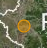
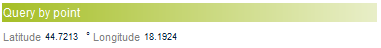
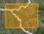
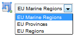
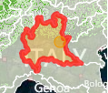
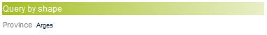
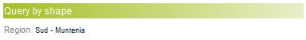
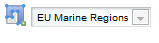

The coordinates of area selected will be shown below the map:

Note that this functionality is enabled only for RASTER datasets.
Top
In order to query a dataset, the system provides the user with several possibilities:
Click on to activate the "Query by point" functionality: left-click on the map to select a valid point, identified by X and Y coordinates (in degrees):

The coordinates of the selected point will be shown below the map:

Note that this functionality is enabled only for RASTER datasets.
Top
Click on to activate the "Query by box" functionality: : left-click on the map to activate the drawing of a rectangular box. Keeping the left button pressed over to map, draw the box, and at the end release the button to specify the area.

The coordinates of area selected will be shown below the map:
Note that this functionality is enabled only for RASTER datasets.
Top
Click on to activate the "Query by geographical area" functionality.
When the dataset selected is a RASTER dataset, selection of a predefined geographical area will be enabled as in the following figure:

Select a valid vector and then left click on the map to select a specific area: the system will shade the area as shown in the figure:

Example for an EU 28 Province:

Example for an EU 28 Region:

When the dataset selected is a SHAPEFILE, selection of a predefined geographical area will be disabled as shown in the following figure:

In this case, select a valid area by a left-click over the map, directly selecting a geographical area of the layer.

Top
Each mouse click over the map provides the possibility to